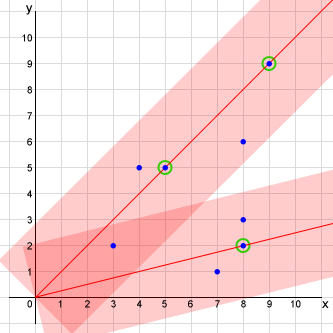

Mosquitoes can be quite annoying, especially if they appear at night in your room and start biting you while you're sleeping. Phylix, who is a good and smart guy, is now having such bad time for several weeks because of them. "Enough is enough!" he said. With his ability, he creates a device which can shoot laser to kill those annoying mosquitoes in an instant.
To make the problem easier, let's reduce Phylix's room from 3-dimensional into a 2-dimensional plane (height and width) and remove all objects other than mosquitoes in the room. The device is put at (0, 0) and there are N mosquitoes flying at (xi, yi) where 0 < xi,yi. Let's assume that the mosquitoes are flying still at their position (actually, once the device is functioning, they all will be killed instantly in their position, so we don't need to trouble our self with the movement). The device can shoot a laser from its position to anywhere in the plane in a straight line until it hit the attic/wall. The laser shot also emits some radiation such that any mosquitoes which distance is not larger than R to the laser shot line will also be killed instantly. One drawback on the device is that it uses some sensors such that the laser shot should be targeted and exactly hit at least one mosquito. By "exactly hit" we mean that the mosquito is not killed because of the radiation, but the laser shot hit, kill and pass through the mosquito.
Shooting the laser consumes a lot of energy and Phylix's mom is the one who's paying the electric bill. Besides, Phylix is also an environmental friendly guy, he doesn't like to spend energy more than what we need. He needs to modify his device such that it only needs to shoot the least amount of laser to kill all the mosquitioes.
Check the following example.
There are 8 mosquitoes located at (3,2), (4,5), (5,5), (7,1), (8,2), (8,3), (8,6) and (9,9) represented by the blue dot in the figure. Let's assume in this case the radiation R equals to 2. We can kill all these mosquitoes with only 2 laser shots represented by the red lines while the pink area are the radiation caused by the laser shots. First shot is targeted to mosquito at (8,2) and it will also kill mosquitoes at (3,2), (7,1) and (8,3). The second shot is targeted to mosquito at (5,5) and it also happens that mosquito at (9,9) lies at this shot line. This second shot will also kill mosquitoes at (3,2), (4,5) and (8,6). Note that mosquito at (3,2) can be killed by either shot #1 or shot #2, it doesn't matter which.
Phylix already wrote an algorithm to determine which mosquitoes to shot in order to minimize the number of shooting, but he's not sure that his algorithm is correct. He needs your help to check the minimum number of shots needed to kill all the mosquitoes.
The first line of input contains an integer T (1 ≤ T ≤ 50) the number of cases. Each case begins with two integers N (1 ≤ N ≤ 2,000) and R (0 ≤ R ≤ 100) denoting the number of mosquitoes and radiation size respectively. The following N lines each contains two integers xi and yi (1 ≤ xi, yi ≤ 10,000) representing the (x,y) position of the mosquito in 2D plane.
For each test case, output in a line the "Case #X: Y" where X is the case number starts from 1, and Y is the minimum number of shots required to kill all the mosquitoes.
|
Explanation for the 1st sample input.
This is the example from problem statement.
Explanation for the 2nd sample input.
There are a same number (and position) of mosquitoes with sample #1, but the size of radiation R = 0, which mean we can only kill those mosquitoes by hitting them directly with the laser. We need 7 shots as mosquitoes at (5,5) and (9,9) can be killed in one shot, while the other 6 mosquitoes can only be killed by 6 different shots.